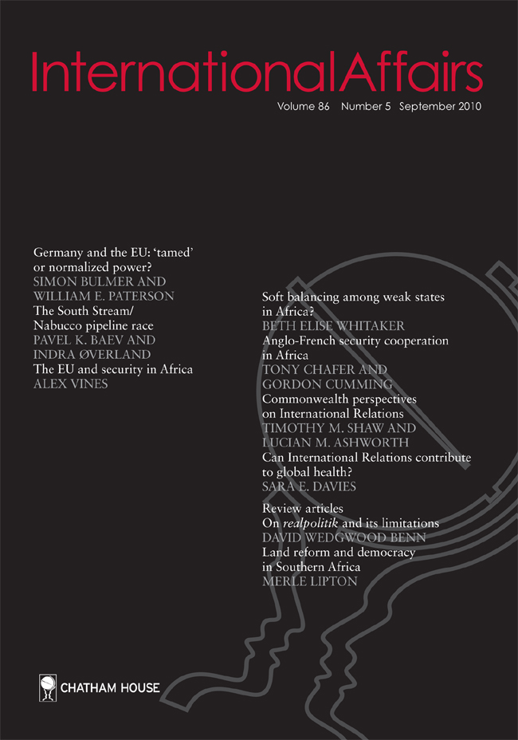

收录于合集

编者按
社交媒体正在改变外交展开的空间。然而关于将社交媒体视为一种外交官日常交流的工具而进行的研究却是有限的，本研究试图填补该领域的不足。通过对伊朗高官的推文进行实证分析，本文认为使用推特和核协议成功之间的相关性表明，社交媒体能够潜在地转变外交并塑造政治转型的可能性。
作品简介
【作者】 Constance Duncombe，澳大利亚墨尔本莫纳什大学（Monash University）国际关系讲师，研究方向为国际关系理论、数字外交和政策制定中的“大思想（big idea）”。
【编译】 赵雷（国政学人编译员，山东大学国际关系硕士研究生）
【校对】 周玫琳
【审核】 王泽尘
【排版】 杨 洋
【来源】 Duncombe, C. (2017). Twitter and transformative diplomacy: social media and Iran-US relations. International Affairs, 93 (3), 545-562.

期刊简介
 《国际事务》（ International Affairs ）是国际关系领域的一流学术期刊，也是多学科综合性学术期刊。本刊于1992年由伦敦皇家国际事务研究所查塔姆研究所（Chatham House）创立，内容来源广泛，力图囊括业内专家、学术新秀对重点、热点问题的最新思考。期刊影响因子为3.748，在91种国际关系类刊物中位列第5名。
推特和转型外交：社交媒体和美伊关系
Twitter and Transformative Diplomacy: Social Media and Iran–US Relations
Constance Duncombe
内容提要
社交媒体越来越多地被用作国家之间的交流手段。外交官和政治领袖在日常工作中越发依赖推特与他们的同行沟通。这些交流是在全球观众的瞩目下进行的，这为这种交流形式提供了独特的额外审视。可以说，推特挑战了传统的外交理念，即通过正式的沟通渠道和非正式的面对面社交活动来实现的外交。然而我们必须关切，在传统面对面外交受到限制的情况下，社交媒体作为传递意图的工具有多大作用，以及这种媒体能否成为对话和信任发展的有效平台。国家代表在社交媒体上发布的帖子反映并框定了国家身份，以及一个国家希望得到他人怎样的承认（recognition）。如果我们适应了这些动态，那么在高级别谈判期间社交媒体上表征（representation）模式的变化就或许可以让政治变革的可能性化为现实。这里的关键是伊朗和P5+1（中美俄英法德）之间令人惊讶的核协议，分析人士和政策制定者一直难以解释。作者认为，推特作为谈判策略的关键部分，说明社交媒体能够影响争取承认的斗争，从而使政治变革的可能性合法化。了解日益显著并有力、作为外交活动工具的社交媒体这一变量，有助于我们深入了解一个常见的问题：除了维持国际秩序的现状外，外交官如何影响变革。
文章导读
01
简介 **
**
社交媒体正在改变外交展开的空间。近年来，随着外交学作为一个学科的复兴，对外交实践的研究有所增加。然而，在聚焦社交媒体和公共外交的研究中，对外交官之间日常接触时所使用的工具只给与了有限的关注。 社交媒体如何促进国家间对话的问题还没有得到足够的重视，也没有充分的实证研究。在此有两个更具体的问题值得研究：首先，社交媒体在建立外交官之间的人际信任方面有多有效？其次，在传统的面对面外交遇到困难的情况下，这种媒介能否成为有效的对话平台?推特作为国家间对话的另一个平台，挑战了传统的外交概念，即通过正式的交流渠道和非正式的面对面社交活动来实现的外交。外交官们在日常工作中越来越依赖推特与同行进行交流。这些交流都是在全球观众面前进行的，这层额外的审视是这种交流形式的独特之处。为了填补数字外交研究的不足，本文试图对如下问题进行研究：在2015年核协议达成之前，伊朗领导人们的推文如何帮助伊朗表明其努力取得积极成果的意图？该意图是成功执行《联合全面行动计划》（ Joint Comprehensive Plan of Action, JCPOA）的关键。作者认为，推特作为谈判策略的关键部分，充分展示了社交媒体能够如何塑造争取承认的斗争，从而使政治变革的可能性合法化。作者通过三个步骤来建立论点。首先，回顾了相关国际关系学文献，发现缺少对各国如何利用社交媒体进行公共外交之外沟通的全面研究。其次，利用神经科学有关理论对面对面外交如何影响国际关系进行分析，认为社交媒体对于建立一定程度的信任至关重要。第三，通过研究伊朗总统鲁哈尼（Rouhani）、最高领袖哈梅内伊（Khamenei）和外交部长扎里夫（Zarif）的推文来证明，伊朗领导人使用推特有助于伊朗和美国双方通过正面的表征（representations）塑造承认（recognition），与以前伊朗的表征—承认动态关系相比，这是一个重大转变。
02
国际关系、社交媒体和国家
各国愈发经常地使用社交媒体与外国公众互动。然而，通过社交媒体进行的国与国之间（state-to- state）的外交接触仍未得到充分研究。近些年，研究国际关系和公共外交的学者将注意力转向了社交媒体与外国公众的互动。公共外交是一种外交政策工具，其核心是与其他公众的外交接触。它是国家发展国际声誉的一个重要方面，用来根据该国的特定议程说服和影响外国公众。然而在传统外交领域，学者们却很少以“数字外交”概念来研究当代国家治理中社交媒体的力量。作者认为，社交媒体和外交在两个层面上相互作用:在纵向上，是从国家决策者到外国公众；而在横向上，则是在国家决策者和他们的同行之间。作者指出，研究者们过分关注国家如何操纵国内外公众的纵向方法，但对横向的概念性和经验性的研究相对较少。对后者至关重要的是，推特有能力表达国家身份，这种身份是争取承认的斗争的组成部分。因此，忽视外交实践中社交媒体的横向作用，就是忽略了国家利益的一个重要方面，这方面利益是有效谈判战略和实现政治变革可能性的关键。
03
信任、推特和转型外交
本节中，作者分析了有关面对面外交（face-to-face diplomacy）和“昂贵的信号（costly signalling）”的国际关系文献，这些文献为理解政治危机期间外交中错综复杂的信任发展做出了重要贡献。但是，在外交“最高级别”的个人面对面接触难以实现的情况下，如何运用这些知识呢？迄今还没有人做出更深入的研究。在面对面接触难以实现时，推特可以成为一个有用的沟通工具。 面对面外交能构筑人际信任，缓解政治危机。近年来，国际关系学科出现了“情感转向”：将情感放在理解全球政治核心位置的研究越来越多。理性判断取决于我们对某个特定的行为人、情境或经历的感受:“最佳的‘理性’判断从根本上取决于一个情感系统，它在生理上告诉我们，我们对所面临的选择有何感受。”情感不仅是理性和认知的核心，也暗示我们如何相信和相信什么。
因此，面对面外交是一种重要的信号传递机制，在世界政治中独树一帜。我们永远不可能真正知道另一个人在想什么。然而，我们可以通过从个人交往中获得的印象，直觉地知道其他人可能在想什么或有什么感受。当一个人和另一个人相遇时，通过镜像神经元建立联系，镜像神经元复制或反映出“每个人的大脑中发生了什么”。这种重复可以让一个人理解其他人对特定事件的反应或谈论特定话题时的想法或感受。这种复制不仅能让我们了解别人的想法或感受，还能让一个人判断另一个人是否试图欺骗他们。事实上，外交官和领导人更有可能根据“个性化的、涉及情感的”、“生动的”信息做出决定，而不是依赖本国情报部门的战略计算。国家领导人根据他们自己的个人印象来决定盟友和对手的信誉，而这种个人印象是由对对方的感觉所决定的。
那么，当个人印象在亲身接触之外形成，情况如何？这时，我们可以尝试通过表征（传达我们对周围世界理解的符号、信号、语言）来直觉地了解另一个人的可信度。外交政策以同样的方式运作——它是通过语言在社会和政治上构建起来的。社会媒体在这种主体间的政策承认过程中是有牵连的，因为国家表达了他们希望被承认的自身表征。通过推特来表达特定的表征，有助于缓解紧张局势升级为危机。
社交媒体提供了深入了解表征模式（patterns of representation）的入口，这些模式融合在一起，反映了一种特定形式的国家身份，而这反过来又是承认过程的核心。当不能或不太可能进行（面对面的）人际接触时，国家决策者如何表征（在此即发推特）事件和经验是评估其意图的关键。
04
（原创或转发）推文、表征和承认
根据上述论点，我们可以思考如下问题：通过社交媒体投射出来的国家身份如何塑造承认，从而使政治变革的可能性合法化。各国代表在推特上发表的声明，肯定可以调动不同政见，从而作为争取承认的斗争的一部分。如果我们能够适应在高级别谈判期间通过社交媒体传播的表征模式的变化，将其视作为争取承认斗争的一部分，我们也就可以确定政治变革的可能性。要理解推特在转型外交中的作用，第一步是考察一个国家在艰难的谈判中提出的表征。作者对伊朗在推特上发表的自我表征进行了分析。利用文本分析软件Leximancer，作者对伊朗最高领袖哈梅内伊、总统鲁哈尼和外交部长扎里夫在2013年5月5日至2015年7月25日期间发布的930条专门与核问题相关的推文进行了内容分析。这样做的目的是，展示伊朗如何承认美国，以及伊朗如何通过特定的表征寻求自身被承认。美伊之间的外交一直存在缺乏高层外交接触的严重阻碍，当鲁哈尼、哈梅内伊和奥巴马等国家领导人无法凭个人直觉了解各自“对手”的意图时，扎里夫和克里等高级外交官之间的外交接触能在多大程度上缓解紧张局势？在这一过程中，社交媒体扮演了怎样的角色？
鲁哈尼、扎里夫和哈梅内伊在推特上发表的言论中多处浮现出相互尊重的表征主题，即伊朗是一个和平、进步和守法的国家，是一个独立和强大国家。这些推文反映了伊朗希望得到的承认。作者认为，伊朗传达了其身份的积极方面，而不是像过去那样过度强调美国身份的消极方面，从而改变了其争取承认的动力。总的来说，伊朗试图通过强调它希望得到的承认，来摆脱其他国家对其根深蒂固的（错误的）承认。鲁哈尼和扎里夫通过推特与美国政策制定者直接接触，以表明他们对核谈判的持续支持，这一说法在他们的推文中得到了强烈体现。这些行动可以促进美国对伊朗意图的理解，从而促成了全面协议的执行。
（1）互相尊重是双赢的 相互尊重是伊朗推文中出现的一个重要表征。它将谈判的条款重新定义为对伊朗和美国都有利的双赢机会，直接反对冷战零和游戏的概念。这些相互关联的推特表征表明，如果美国对伊朗身份的各个方面给予充分考虑，这将肯定伊朗身份的价值，确认伊朗对核问题的关切得到了认真对待。如此一来，则标志着伊朗因其身份而受到尊重: @鲁哈尼:双赢的结果不仅是有利的，而且是可以实现的。零和和、冷战思维导致了所有人的损失 @扎里夫:致力于立即开始起草全面核协议。双方将在相互尊重的基础上达成一项严肃的协议。 扎里夫与美国共和党参议员汤姆科顿（Tom Cotton）也曾在推特上进行接触，科顿曾表示，“奥巴马和哈梅内伊之间关于核谈判的任何行政协议都可以“大笔一挥就撤销”。”作为对抗，扎里夫向科顿发了一条推特： @扎里夫:我们需要的是严肃的外交手段，而不是大男子主义的个人诽谤。祝贺你喜得贵子。愿你和你的家人享受与他在一起的时光。@SenTomCotton 对伊朗来说，接触科顿参议员是一个独特的举动。扎里夫对把伊朗说成是威胁和不理智的做法提出了挑战，他说，这种说法并不代表对外交政策的重大贡献，只是一种软弱的恫吓。扎里夫的回应中所体现的伊朗并没有因此回到美国之前所称的咄咄逼人和干预的姿态，而是主张继续通过外交努力来解决核争端，达成一项双方都能接受的协议。这种交流方式对扎里夫来说并不罕见。在核谈判的最初阶段，法国否决了一项协议草案。扎里夫在推特上对克里表示，他对谈判结果感到失望。 @扎里夫:国务卿先生，是伊朗在周四晚上把美国一半以上的草稿都撕掉了吗?并在周五早上对此发表了公开评论? 因此，伊朗在P5+1谈判中使用推特对传统外交观念的挑战尤为重要。伊朗国家代表没有依赖正式的沟通渠道，而是通过社交媒体公开与美国代表接触。在正式谈判之外表达对法国否决协议草案的回应，使他能够一次性表达伊朗的不满，并因此在不危及谈判的情况下公开表达了这种感受。能够在谈判过程中“诚实地交谈”，是朝着在外交官之间和国家间建立互信关系的重要一步。扎里夫直接向克里公开抱怨的举动表明，伊朗试图把自己描绘成一个进步与和平的国家，渴望建设性的接触，而不是承认自己是危险与非理性的。 （2）和平进步的伊朗 对国际法重要性的关注体现了伊朗身份的强大和进步的本质。在核谈判期间，哈梅内伊、鲁哈尼和扎里夫强调，伊朗的行为符合《核不扩散条约》的限制和国际原子能机构的要求。通过这种表征，伊朗寻求被承认看做守法的国际公民，反击美国对伊朗不合理的承认和违反国际法的行为。伊朗将《不扩散核武器条约》第四条规定的铀浓缩权利视为一个得到所有伊朗人支持的国家议题，这条“红线”不仅被视为一种外交策略，还被视为伊朗希望得到承认的国家身份的延伸: @鲁哈尼:对我们来说，有一些红线是不能跨越的。我们的国家利益是我们的红线，包括国际法律规定的利益和其他权利。 @哈梅内伊:美国需要的对话——如果不是更多——并不比伊朗少。谈判者应遵守红线，不容忍任何负担、羞辱和威胁。 伊朗的国家利益与国际社会的利益是一致的:伊朗希望在《不扩散核武器条约》的主持下继续其铀浓缩计划。因此，“红线”的表征被用来表示伊朗是一个按照国际法行事的进步国家，而不是一个位于法律约束之外的国家。伊朗继续坚持它的行为完全符合《不扩散核武器条约》的条款，反驳了关于它的行为是非理性的说法。
05
谈判的机会
鉴于伊朗作为一个进步与和平国家的持续代表性，核谈判被不约而同地框定为两国的机会，强调伊朗与美国在相互尊重的基础上进行对话。对伊朗来说，在被承认为独立和强大的同时，有可能减轻制裁的压力，这是改变伊美关系的重大机会。伊朗革命被用来代表伊朗抵抗其他国家干涉的力量，最明显的是来自美国等新帝国主义国家的干涉。因此，通过革命获得独立的表征可以被理解为重申意识形态狂热和完全拒绝美国的建议: @哈梅内伊:我们的谈判代表是革命的孩子。我们强烈支持那些负责我们外交的人。
在推特上“革命的孩子”的表述中，话语的微小转变是显而易见的。可以肯定地理解，“革命的孩子”是指那些理想和价值观在特定政治参与中形成的人，这种政治参与即推翻巴列维君主制和将伊朗建设为一个强大、独立的什叶派国家。然而，使用“孩子”一词意味着一种二元身份。它首先表明，伊朗摆脱了日益分裂的派系政治的约束。自改革派总统哈塔米(Ayatollah Khatami)在2004年败给强硬派总统艾哈迈迪内贾德(Mahmoud Ahmadinejad)以来，派系政治一直是伊朗的执政特色。第二，它意味着拥护革命的正确之处，为伊朗树立一种鼓舞人心的政治斗争形象。在目前的情况下，这种表征既回顾了伊朗从西方干预下独立的斗争，也期待伊朗权力得到承认的新政治秩序。以前，哈梅内伊并不支持伊朗和美国之间关系正常化，在这里，可以看到其对谈判小组的明确支持。从这个表征中衍生出来的是一种对谈判者的信任，他们被认为是勇敢的“革命的孩子”，并支持他们与西方，尤其是美国的接触。谈判代表们冒着风险与美国达成更大程度的和解。在这里，妥协的想法不是屈服于西方的要求，而是开辟一条新的独立道路的标志。因此，谈判是伊朗作为一个强大的独立国家取得进展的一个机会，而不是障碍。这种独立既抵制了国际社会施加的制裁，也为植根于伊朗革命原则的和解提供了另一种基础。
从对伊朗推文的简短讨论中，我们可以看到，社交媒体所呈现的国家身份如何塑造了承认，进而使政治变革的可能性合法化。虽然伊朗的推文继续使用美国的主流形象（一个虚伪的恶霸）来表达对谈判障碍的沮丧，但这些已经被伊朗的正面形象所调和。伊朗的推文表明，通过摆脱根深蒂固的(错误的)承认的努力，从而实现政治变革的可能性是存在的。总体而言，鲁哈尼和扎里夫与美国方面接触的方式表明他们对核谈判的持续支持，随着谈判的继续，伊朗有意朝着积极的结果努力。
06
**结论
**
伊朗的案例表明，社交媒体通过传达表征，可以塑造争取承认的斗争，从而使政治变革的可能性合法化。一方面，伊朗通过推特传达了自身身份的积极方面，改变了其争取承认的动态。另一方面，美伊领导人在推特上的直接接触，增加了人际信任，这对核谈判的成功至关重要。
**评述
**
2015年7月，伊朗核问题最后阶段谈判达成了历史性的全面协议。对于这次谈判成功的原因，学界进行了各种角度的分析，例如相关“移情理论”的研究将谈判的成功归因于奥巴马出色的共情能力。本文则提供了另一个“情感转向”的研究视角，即伊朗领导人通过传达“表征”改变了国际社会对伊朗身份的认知，从而实现了一次外交与政治的转型。当然，在这一过程中，推特作为一个非传统交流平台，在塑造两国信任上发挥了重要作用。近年来，越来越多的国家领导人与外交官开通了社交媒体账号，随着领导人们在社交网络上的互动愈发频繁，社交媒体将会成为外交的核心组成部分。可以说，社交媒体与转型外交息息相关。我们需要注意的是，这种媒介在发展外交官之间的人际信任方面有多大效力？在传统的面对面外交受限或难以实现的情况下，它能否成为富有成效的对话平台？本文中以美伊关系为案例，论述了社交媒体在一方面可以提供识别国家身份的表征，或是传达塑造国家信誉的信号，从而塑造了国家间的信任，推动了更多外交成果的取得；在另一方面，社交媒体的即时交流速度可以打破传统外交模式中的阻碍交流的官僚作风，使社交媒体成为了正式外交场合的补充。值得注意的是，尽管本文中的案例是正面的，但这不足以说明社交媒体外交仅有积极的效果。反之，社交媒体的非正式性和即时性，可能会造成更加恶劣的外交影响。例如，本公众号推文《信誉之后：川普时代的美国外交政策》译介的研究曾分析，特朗普内容随意、混乱的推特内容严重损害了美国的国际信誉。本文社交媒体在外交实践中的作用以及发挥作用的机制，在社交媒体运用频繁的今天，如何管理社交媒体以突出其优势，规避其风险，是进一步需要思考的问题。

本文由国政学人独家编译推荐，文章观点不代表本平台观点，转载请联系授权。

添加 “国小政”微信，获取最新资讯


好好学习，天天“在看”

国政学人
支持学术公益与知识传播
微信扫一扫赞赏作者 __赞赏
已喜欢，对作者说句悄悄话
取消 __
发送给作者
发送
最多40字，当前共字
上一页 1/3 下一页
长按二维码向我转账
支持学术公益与知识传播
受苹果公司新规定影响，微信 iOS 版的赞赏功能被关闭，可通过二维码转账支持公众号。